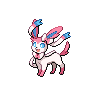

ニンフィアのデータ
基本ステータス
もちもの・メダル・条件付き効果なし。割合の値は％です。待ち時間は短縮率、移動速度はゲーム内の値です。
| Lv | HP | 攻撃 | 防御 | 特攻 | 特防 | 移動速度 | 急所率 | 待ち時間 | HP吸収率 | 通常攻撃の速さ | 貫通 |
|---|---|---|---|---|---|---|---|---|---|---|---|
| 1 | 3406 | 167 | 52 | 70 | 38 | 3700 | 0 | 0 | 0 | 10 | 0 |
| 2 | 3494 | 171 | 57 | 84 | 42 | 3700 | 0 | 0 | 0 | 10.67 | 0 |
| 3 | 3595 | 176 | 62 | 101 | 47 | 3700 | 0 | 0 | 0 | 11.43 | 0 |
| 4 | 4105 | 201 | 89 | 185 | 73 | 3700 | 0 | 0 | 0 | 15.31 | 0 |
| 5 | 4238 | 208 | 96 | 207 | 80 | 3850 | 0 | 5 | 0 | 16.32 | 0 |
| 6 | 4391 | 216 | 104 | 232 | 88 | 3850 | 0 | 5 | 0 | 17.48 | 0 |
| 7 | 4567 | 225 | 113 | 261 | 97 | 4000 | 0 | 5 | 0 | 18.82 | 0 |
| 8 | 4770 | 235 | 124 | 294 | 107 | 4000 | 0 | 5 | 0 | 20.36 | 0 |
| 9 | 5003 | 247 | 136 | 332 | 119 | 4150 | 0 | 10 | 0 | 22.13 | 0 |
| 10 | 5271 | 260 | 150 | 376 | 133 | 4150 | 0 | 10 | 0 | 24.17 | 0 |
| 11 | 5579 | 275 | 166 | 427 | 149 | 4300 | 0 | 10 | 0 | 26.52 | 0 |
| 12 | 5934 | 293 | 185 | 486 | 167 | 4300 | 0 | 10 | 0 | 29.22 | 0 |
| 13 | 6342 | 313 | 207 | 553 | 188 | 4300 | 0 | 10 | 0 | 32.32 | 0 |
| 14 | 6811 | 336 | 232 | 631 | 212 | 4300 | 0 | 10 | 0 | 35.89 | 0 |
| 15 | 7350 | 363 | 260 | 720 | 240 | 4300 | 0 | 10 | 0 | 39.99 | 0 |

ニンフィア急所・HP吸収などの仕様
急所の対象は通常攻撃です。 基本の急所率は全レベル0%です。
Lv7から、特攻系のダメージを与えたとき、その12.5%を回復する効果を得ます。通常攻撃のHP吸収率とは別の情報です。
ほかのブイズ4匹と同じチームにいると、特攻系ダメージに応じたHP回復率が1ポイント上がるとの記載があります。この条件は計算へ自動適用しません。
通常攻撃
効果・条件の説明
3回目が強化攻撃になります。ニンフィアに進化した後は、強化攻撃が命中すると自分の移動速度が1秒間75%上がります。
わざ1
スピードスター
効果・条件の説明
4つの星を飛ばして攻撃します。
マジカルフレイム
効果・条件の説明
指定方向へ跳び、4つの炎を作って相手へ順に飛ばします。命中した相手の特攻を1秒間15%下げ、最大4段階まで重なります。
攻撃対象の優先順位
マジカルフレイムは、射程内に相手プレイヤーがいない場合だけ野生ポケモンを優先する。
通常版の効果・条件
炎が1つ命中するたびに、このわざの残り待ち時間が12%短くなります。同じ相手への2つ目以降の炎は、初回の28%のダメージです。
マジカルフレイム+
効果・条件の説明
強化後の変更点：炎が1つ増え、4つから5つになります。
攻撃対象の優先順位
マジカルフレイムは、射程内に相手プレイヤーがいない場合だけ野生ポケモンを優先する。
通常版の効果・条件
炎が1つ命中するたびに、このわざの残り待ち時間が12%短くなります。同じ相手への2つ目以降の炎は、初回の28%のダメージです。
ハイパーボイス
効果・条件の説明
前方へ音波を繰り返し放ちます。離れた位置で当てるほど威力が上がります。命中した相手の特防を1.5秒間20%下げ、低下量は最大80%です。
ハイパーボイス+
効果・条件の説明
強化後の変更点：音波が1発増えて6回から7回になります。命中した相手の移動速度も30%下げます。
わざ2
つぶらなひとみ
効果・条件の説明
相手へダメージを与え、攻撃を1秒間15%、移動速度を1秒間60%下げます。
ドレインキッス
効果・条件の説明
相手と自分を往復するキッスを放ち、自分に戻るたびにHPを回復します。
通常版の効果・条件
キッスが相手へ当たるごとに、移動速度を1秒間、最初は50%下げます。0.5秒後に減速が弱まります。離れすぎると途中で消え、近いほどダメージと回復が速く起こります。
通常版の効果・条件
キッスは相手と自分の間を最大3往復し、相手への命中でダメージ、自分への到着で回復が発生します。
ドレインキッス+
効果・条件の説明
強化後の変更点：HP回復量が増えます。
通常版の効果・条件
キッスが相手へ当たるごとに、移動速度を1秒間、最初は50%下げます。0.5秒後に減速が弱まります。離れすぎると途中で消え、近いほどダメージと回復が速く起こります。
通常版の効果・条件
キッスは相手と自分の間を最大3往復し、相手への命中でダメージ、自分への到着で回復が発生します。
めいそう
効果・条件の説明
移動速度を30%、特攻を40%、特防を10%、それぞれ3秒間上げます。
めいそう+
効果・条件の説明
強化後の変更点：使用後3秒以内に受けるわざの最初のダメージを1回防ぎ、3秒間のシールドを獲得します。通常攻撃は防がず、妨害や状態異常は受けます。
ユナイトわざ
ユナイトわざ使用後の共通強化
移動速度30%上昇、わざの待ち時間短縮30%、最大HPの20%のシールド（6秒）
フェアリーハーモニー
効果・条件の説明
状態異常を解除して無敵になって跳び上がり、着地後に自分を強化します。
無敵と回復の適用範囲
フェアリーハーモニーの無敵は着地した時点で終了する。使用後の与ダメージによる回復は、シールドへ与えたダメージでは発生しない。
効果・条件
着地の攻撃では与えたダメージの60%を回復します。着地後10秒間は、特攻で与えたダメージの50%を回復します。シールドへのダメージでは回復しません。